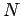
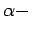
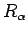
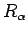

Una de las estrategias de ordenamiento de números difusos consiste en caracterizar cada número difuso por un valor representativo o índice, y emplear el ordenamiento natural de los reales.
De la múltiples propuestas que existen para calcular ese valor representativo, presentamos aqui una ligera variación sobre la propuesta de Delgado y Vila.
Sea  un número difuso, y
un corte. Definimos
 el valor representativo de
el valor representativo de  como
como
Claramente se ve que
 ; además, si variamos desde 0 hasta
; además, si variamos desde 0 hasta  entonces
entonces
 ``viaja'' desde hasta . Denominamos a el optimismo de la representación crisp que hacemos del intervalo.
``viaja'' desde hasta . Denominamos a el optimismo de la representación crisp que hacemos del intervalo.
Sea una función creciente tal que y . Definimos , el valor representativo de como el promedio ponderado por de los valores representativos de todos los cortes: